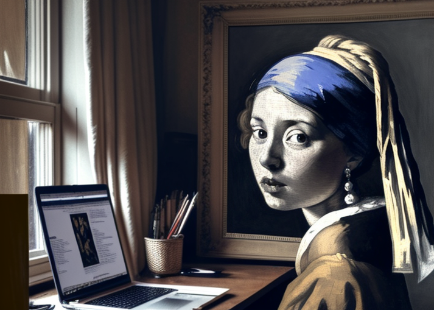

<!-- About Section -->
<section id="about" class="bg-gray-100 py-20">
    <div class="container mx-auto px-4">
        <h2 class="text-5xl font-semibold text-gray-800 text-center">About me</h2>
        <p class="text-gray-100 mb-8 text-center">Check out some of my recent work</p>
        <div class="grid grid-cols-1 md:grid-cols-2 gap-12">
            <div class="text-center md:text-left">
                <p class="text-xl mb-6">
                    Born and raised in Paris, I discovered my passion for computer science at a young age. I have
                    always been fascinated by technology and the endless possibilities it offers. This curiosity led
                    me to pursue a degree in computer science at F2I Vincennes.
                </p>
                <p class="text-xl mb-6">
                    I am specialized in back-end web development but also have knowledge of front-end fundamentals.
                    My primary programming languages include Python and PHP, and I have experience
                    working with Django and Laravel frameworks.
                </p>
                <p class="text-xl mb-6">
                    When I'm not coding, you'll find me immersed in reading about AI, as it's my true passion. I'm
                    currently working on mastering Chat GPT and midjourney, constantly seeking ways to expand my
                    knowledge and contribute to this captivating field.
                </p>
            </div>
            <div class="relative group">
                
                <div class="absolute bottom-0 left-0 w-full bg-black bg-opacity-50 text-white text-center py-2 opacity-0 group-hover:opacity-100 transition-opacity duration-500 ease-in-out">
                    <p class="text-lg">Parody of "Girl with a Pearl Earring" made with midjourney </p>
                </div>
            </div>


        </div>
    </div>
</section>